Your Mac,
in your pocket.
Control your Mac from your iPhone. Your Mac’s screen shows live above a full Mac keyboard and trackpad, at home or from anywhere. Fold an iPhone Duo like a laptop, or use any iPhone.
Free. For iPhone Duo and any iPhone with iOS 17 or later. Needs a Mac with macOS 14 or later.
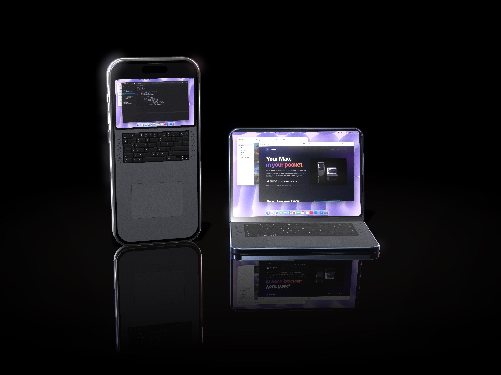
Every key you know.
A full Mac keyboard with the top row for brightness, Mission Control, Spotlight, media, and volume. Hold ⌘ ⌥ ⌃ while you type, or tap to latch. The Touch ID key locks your Mac.
- Real key click sounds and haptics
- A Bluetooth keyboard on the iPhone types on the Mac too
- Dictation, emoji, and other languages through the iPhone keyboard
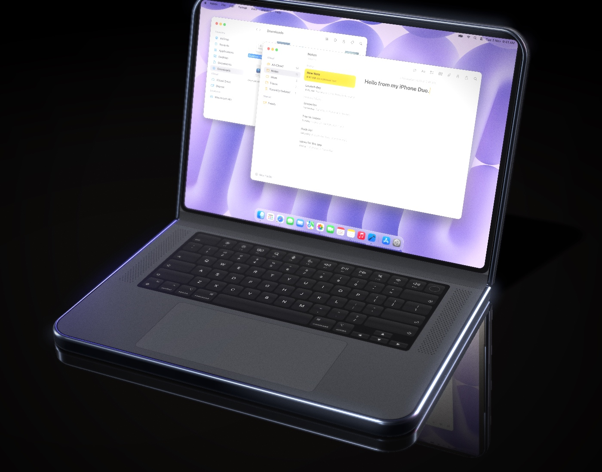
A real trackpad.
Tap to click, two-finger tap to right-click, scroll with momentum, pinch to zoom, and swipe three fingers to switch desktops.
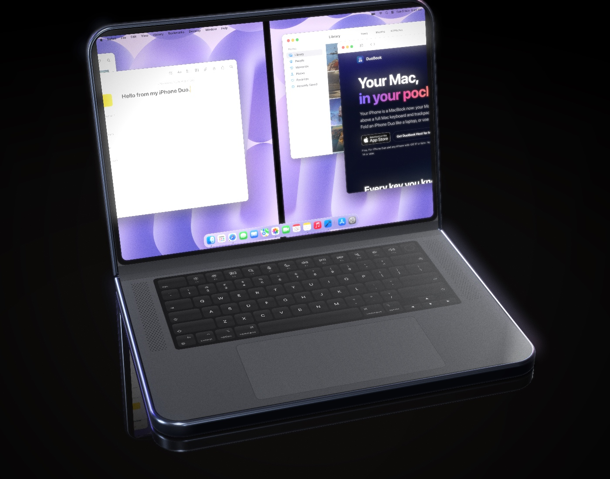
On iPhone Duo. And every iPhone.
No iPhone Duo? DuoBook works on any iPhone with iOS 17: your Mac’s screen on top, a full keyboard and trackpad below, all on one screen.
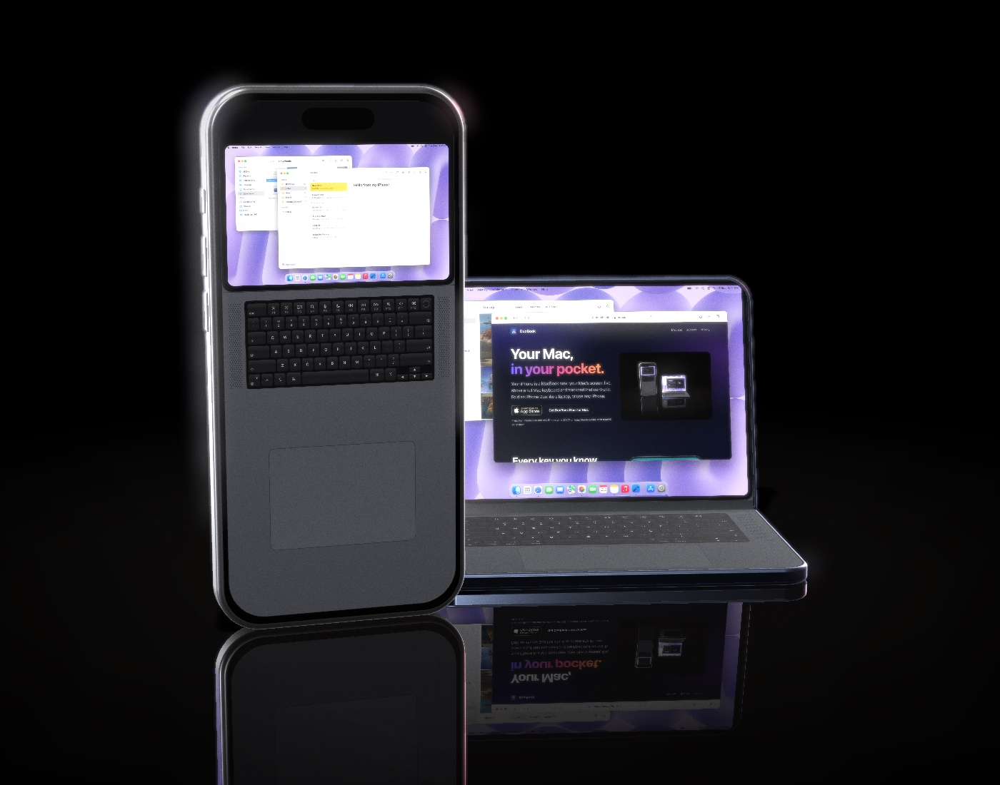
Your Mac at home. You, anywhere.
At home it finds your Mac on Wi-Fi in a blink. Away, it reaches it over the internet. There’s no account to create, and nobody but you can see your screen.
Encrypted end to end
Pair once with a 6-digit code shown on both screens. Every connection after that is encrypted, with keys only your iPhone and Mac have.
DuoBook Anywhere
Reach your Mac from any network, behind any router, with nothing to set up. An optional subscription with a free week.
Or use your router
Turn on “Access from anywhere” on the Mac. It opens the way on most home routers by itself, for free.
40 years of Apple. 39 looks.
Dress DuoBook as any Mac laptop, from today’s MacBook Pro and MacBook Air back to the PowerBook 100, or as a classic computer: the 1984 Macintosh, Lisa, Apple II, iMac G3 and G4, eMac, and the G4 Cube. Each has its own keys, trackpad, key sounds, and lid. 11 are free, and the rest come with a one-time Classics unlock.
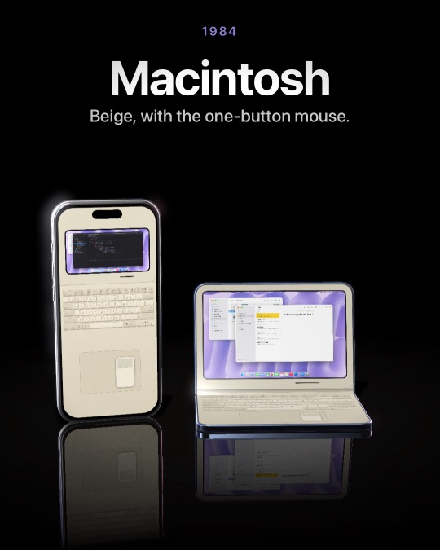
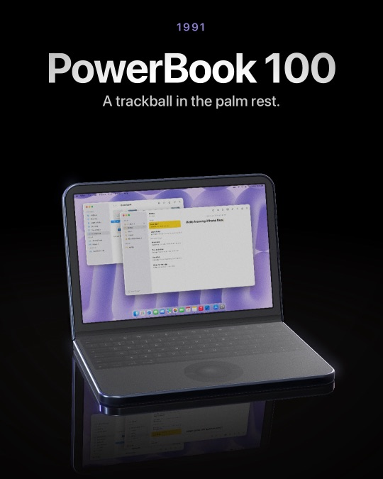
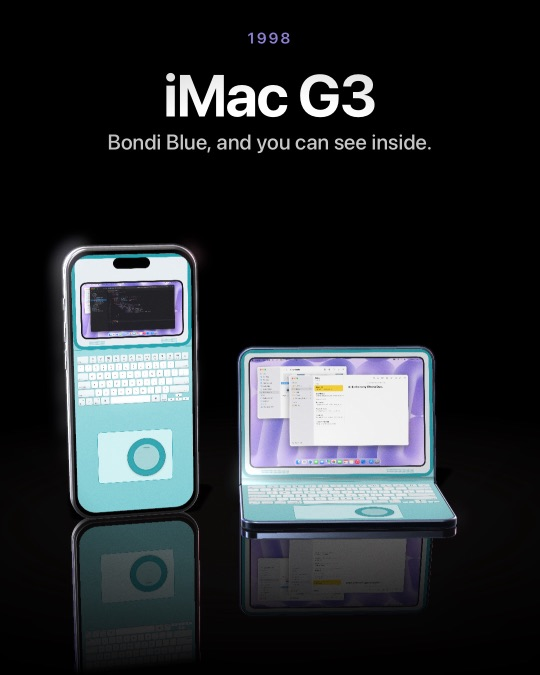
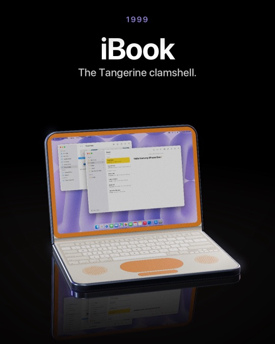
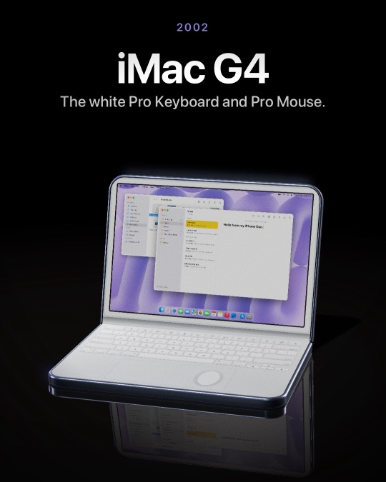
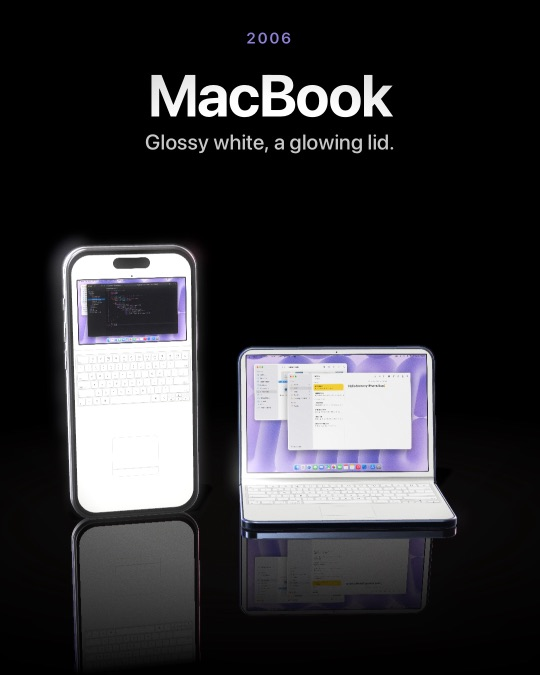
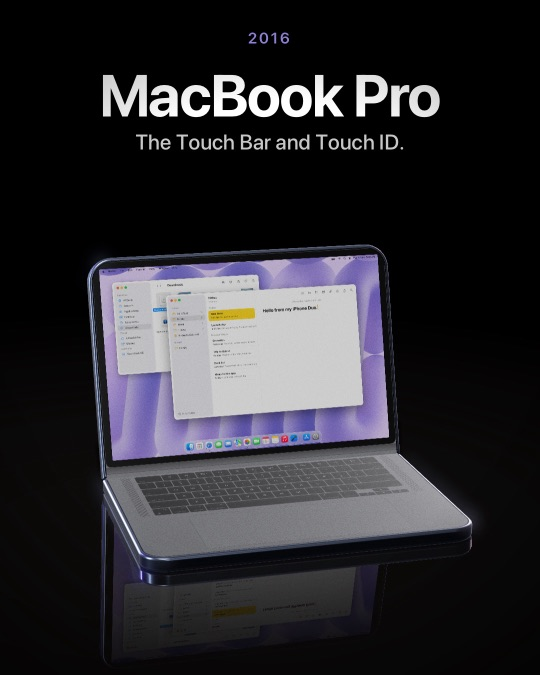
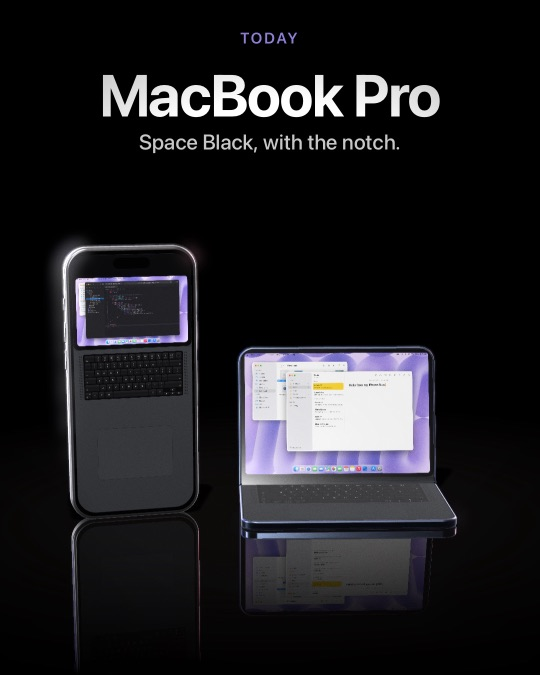
More than a remote desktop app.
Remote desktop and screen sharing apps put your Mac on your iPhone and leave you poking at it. DuoBook gives you the keyboard and trackpad too, laid out like a MacBook, so you can really work: write, code, answer email, and use every Mac app.
- Hear your Mac’s sound, copy and paste both ways, and send photos and files to your Mac
- Open any Mac app, and talk to type in your language
- Every display your Mac has, and a sleeping Mac wakes when you connect
- A built-in demo Mac, so you can try it before setting up
Set up in a minute.
Get DuoBook. It’s free.
For iPhone Duo and any iPhone with iOS 17. Questions or ideas? Follow @duobook.app or write to support@getduobook.com.